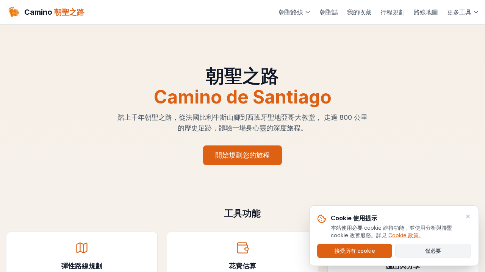
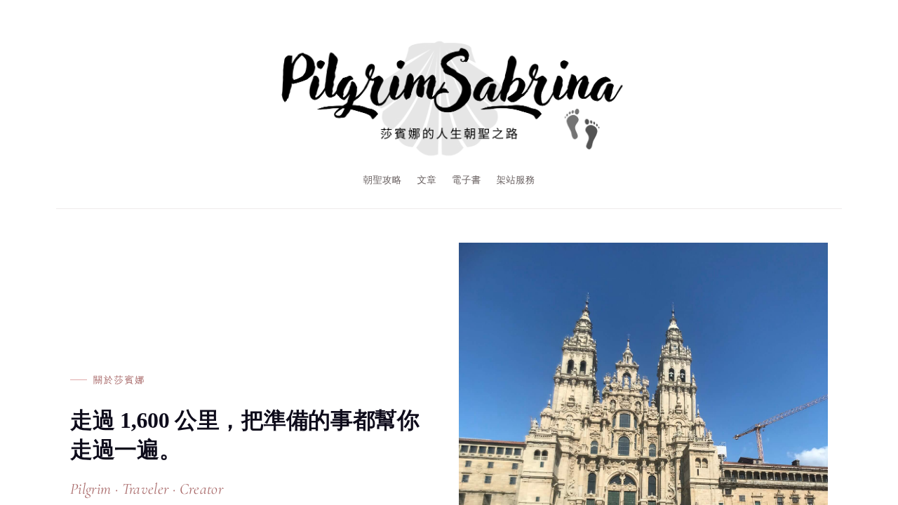

⭐ 好站推薦
出發前我最常用的三個站：一個排路線、一個學經驗、一個找同伴。收藏這頁就夠了。
🧭 Camino Tools — 很棒的規劃工具

彈性路線規劃、花費估算、匯出分享 — 出發前先在這裡排好每天的行程。每天走幾公里、住哪裡、花多少，一拉就出來，是我做 35 天行程表的起點。
📖 莎賓娜《第一次走朝聖之路就上手》

走過三條朝聖之路的前輩，把選路線、訂庇護所、抓預算一次講清楚。第一次走、不知道從哪開始的人，先看這站就對了。
💬 無工商版-西班牙朝聖之路（LINE 社群）
超過千人的台灣朝聖者交流社群，無商業推廣，純粹分享行程規劃、找尋同行夥伴與即時問答。路上臨時有問題、想找人一起走，直接在裡面問最快。
⭐ 「工具排路線、前輩給經驗、同伴陪你走 — 三個都收好再出發。」
📊 延伸資源：完整行程規劃表 (Google Sheets) → 布魯克 35 天實際行程、住宿推薦與費用明細。